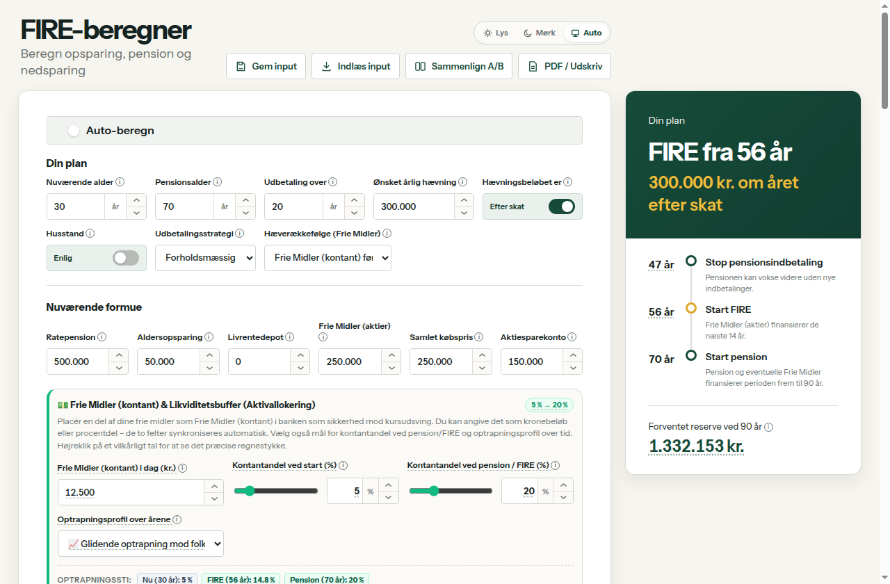
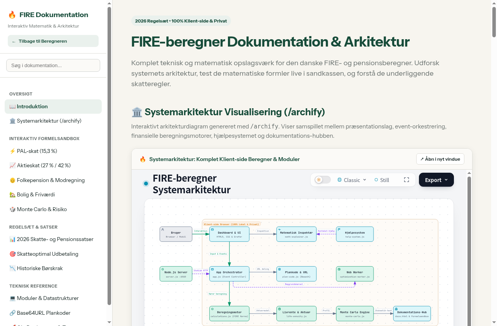

FIRE-beregner Dokumentation & Arkitektur
Komplet teknisk og matematisk opslagsværk for den danske FIRE- og pensionsberegner. Udforsk systemets arkitektur, test de matematiske formler live i sandkassen, og forstå de underliggende skatteregler.
🏛️ Systemarkitektur Visualisering (/archify)
Interaktivt arkitekturdiagram genereret med /archify. Viser samspillet mellem præsentationslag, event-orkestrering, finansielle beregningsmotorer, hjælpesystemet og dokumentations-hubben.
Arkitekturmæssige Hovedprincipper
- 100% Klient-side Isolation: Beregneren kører udelukkende i brugerens webbrowser. Ingen formuedata, indkomster eller pensionsoplysninger sendes nogensinde over netværket.
-
Reaktiv Event-Orkestrering:
app.jslytter på brugerinput og genberegner synkront i lette scenarier, eller benytteroptimization-worker.jstil tunge Monte Carlo-kørsler. -
Modulær Dekobling: Kerneberegningerne (
calculations.js,life-annuity.js,monte-carlo.js) er rene funktioner uden DOM-afhængigheder, hvilket muliggør uafhængig automatiseret testning. -
Selvstændigt Hjælpe- og Docs-system: Både in-app hjælpesystemet (
help-system.js) og dette dokumentations-hub (docs.html) kan tilføjes eller fjernes uden at påvirke beregnerens kerne.
📸 Visuelt Galleri & Skærmbilleder
Skærmbilleder af brugerfladen, beregnerens grafer, in-app hjælpesystemet og den interaktive dokumentationsportal.
🖥️ Cockpit Dashboard & Grafer
Multi-layer streamgraph med fordeling mellem pensioner, frie aktier, kontantreserve og boligfriværdi samt synkroniseret hover-koordinator.

💡 In-App Hjælpecenter (Slide-over Drawer)
Søgbart videnscenter med forklaringer på alle 2026-regler, PAL-skat, modregning i pensionstillæg og felt-inspektør.
🚀 7-Trins Guidet Rundvisning (Spotlight)
Interaktiv walkthrough med dynamisk element-spotlight og hjælpetekster, der guider nye brugere igennem beregnerens forudsætninger.

🧪 Interaktiv Dokumentation & Formelsandbox
Fritstående portal med live skydere til afprøvning af PAL 15,3 %, aktieskat 27/42 %, modregning og Monte Carlo-stokastik.

🧪 Interaktiv Formelsandbox
Eksperimentér med de underliggende matematiske beregninger. Træk i skyderne for at se afkast, skat og modregning opdateret i realtid.
⚡ PAL-skat (15,3 % Lagerskat)
Pensionsafkastbeskatning efter PAL § 2. Trækkes årligt af nettoafkastet.
📈 Aktieindkomstskat (27 % vs. 42 %)
Progression ved realisation af gevinster og udbytter på frie midler i 2026.
👴 Folkepension & Modregning (2026)
Dynamisk modregning i pensionstillægget ved anden pensionsindkomst.
🏡 Boligfriværdi & Nedsparingsprovenu
Beregner friværdi ved FIRE baseret på prisvækst og gældsafdrag.
🎲 Monte Carlo Stokastisk Simulator (Box-Muller)
Simulerer 30-årige formueforløb for en person med 1 mio. kr. i frie midler og 40.000 kr. årlig hævning (4% SWR).
📊 2026 Skatte- og Pensionssatser
Gældende satser anvendt i beregnerens skattemotor.
| Område | Sats / Grænse 2026 | Type | Lovgrundlag & Bemærkning |
|---|---|---|---|
| PAL-skat | 15,3 % | Pensionsafkast | PAL § 2: Årlig lagerskat på afkast af ratepension, aldersopsparing og livrente. |
| Aktiesparekonto (ASK) | 17,0 % (Loft: 174.200 kr. / 348.400 kr. par) | Lagerskat | Skattefrie udbetalinger, modregnes aldrig i folkepension. |
| Aktieindkomstskat (lav) | 27,0 % op til 79.400 kr. (158.800 kr. par) | Realisation | Personskatteloven § 8 a: Lav progressionssats for gevinster og udbytter. |
| Aktieindkomstskat (høj) | 42,0 % over knækgrænsen | Realisation | Højeste marginalskat på aktieindkomst over progressionsgrænsen. |
| Folkepension Grundbeløb | 90.528 kr./år (181.056 kr. for par) | Statspension | Udbetales fuldt uafhængigt af private pensionsudbetalinger. |
| Folkepension Pensionstillæg | Op til 104.772 kr. (enlig) / 107.232 kr. (par) | Tillæg | Modregnes med 30,9 % (enlig) eller 32,0 % (par) over bundfradraget. |
| Modregningsbundfradrag | 98.800 kr./år (enlig) / 197.900 kr. (par) | Fradrag | Indtægt fra ratepension, livrente og ATP over dette beløb modregnes. |
🎯 Skatteoptimal Udbetalingsrækkefølge (taxOptimal)
Hvordan beregnerens optimeringsalgoritme minimerer den samlede levetidsskat.
- Trin 1: Udnyt 27 % aktieskatteknækket: Hvert år hæves aktiegevinster fra frie midler præcist op til 79.400 kr. (eller 158.800 kr. for par) for altid at maksimere den lave 27 % beskatning frem for 42 %.
- Trin 2: Tøm 0 % skattebelastede midler: Resterende forbrugsbehov dækkes af ubeskattet anskaffelsessum på frie midler, Aktiesparekonto og efter pensionsalderen Aldersopsparing.
- Trin 3: Hæv pensionsmidler under modregningsgrænsen: Ratepensioner fordeles så vidt muligt over 15–20 år fremfor 10 år, så den årlige udbetaling holdes under 98.800 kr. bundfradraget.
- Trin 4: Minimer 42 % aktieavance: Hvis der stadig mangler likviditet, hæves overskydende aktieavance modvilligt med 42 % beskatning som sidste udvej.
⚖️ Folkepension Modregnings-Assistent
Konkrete strategier til at minimere eller helt undgå modregningstab i folkepensionens pensionstillæg.
Hvad koster modregning i pensionstillægget?
For hver 1.000 kr. du udbetaler i ratepension, livrente eller ATP over bundfradraget (98.800 kr. for enlige / 197.900 kr. for par), mister du 309 kr. som enlig og 320 kr. som par i reduceret pensionstillæg.
De 3 Gyldne Optimeringsstrategier:
- 1. Prioriter modregningsfrie opsparinger: Aktiesparekonto (ASK), frie aktiemidler og Aldersopsparing modregnes 0 kr. i folkepensionen! Udbetal derfor fra disse kilder før ratepensioner.
- 2. Stræk ratepension over 15–20 år frem for 10 år: Ved at forlænge udbetalingsperioden holder du den årlige ratepension under bundfradraget på 98.800 kr., så du bevarer 100 % af pensionstillægget.
- 3. Udnyt 27 % aktieskatte-progressionsgrænsen: Aktieudbytter og aktieavancer modregnes ikke i pensionstillægget. Hæv systematisk gevinster op til 79.400 kr. (158.800 kr. for par) for at minimere levetidsskatten.
💰 Kontantreserve, Rente & Glide Path
Beskyttelse mod sekvensrisiko (Sequence-of-Returns Risk) og modeller for likviditetsstyring.
Hvorfor en kontantreserve i FIRE-planen?
Hvis et aktiemarked krakker i dine første pensionsår, og du er tvunget til at sælge aktier til bundpriser for at betale husleje og mad, udhules porteføljen uopretteligt. En kontantreserve på 1–3 års leveomkostninger sikrer, at du kan lade aktierne ligge og komme sig.
Afkastenes rækkefølge har enorm betydning i udbetalingsfasen. Dårlige afkast i starten kan ødelægge planen, selvom det gennemsnitlige langsigtede afkast er fint.
Beregneren kan gradvist øge kontantandelen af frie midler fra fx 5 % ved 50 år til 25 % ved FIRE-alderen, så du automatisk gearer risikoen ned.
Indlånsrenter på bankindeståender beskattes som kapitalindkomst (ca. 25–42 %) og holdes regnskabsmæssigt adskilt fra aktieindkomsten.
📉 Historiske Børskrak & Sequence-of-Returns
Beregneren stresstester planen mod de 4 værste globale finanskriser.
-80 % nominelt fald over 3 år. Den mest brutale krise i moderne finanshistorie.
To på hinanden følgende tabsår (-15 %, -26 %) kombineret med tocifret inflation (stagflation).
Tre på hinanden følgende tabsår for aktier (-9 %, -12 %, -22 %) efter teknologi-euforien.
-37 % chokfald over 12 måneder, efterfulgt af et hurtigt og stærkt V-formet opsving.
🌪️ Sensitivitets-analyse & Tornado-diagram
Identificerer hvilke parametre der har størst indflydelse på din økonomiske frihed.
Beregnerens Tornado-motor stresstester din plan ved at variere 4 nøglefaktorer op og ned og beregne den resulterende ændring i din opnåelige FIRE-alder:
| Faktor | Testet variation | Typisk sving i FIRE-alder | Strategisk Betydning |
|---|---|---|---|
| Forbrugsbehov (Netto) | ±20 % | 4–7 år | Den mest direkte styrbare faktor. Lavere leveomkostninger reducerer både opsparingskravet og den nødvendige kapitalreserve. |
| Investeringsafkast | ±1 %-point | 3–6 år | Renters-rente effekten forstærkes massivt over en 20–40 årig horisont. |
| Inflation | ±1 %-point | 3–5 år | Høj inflation udhuler købekraften og hæver det nominelle forbrugsbehov over tid. |
| Månedlig opsparing | ±20 % | 2–4 år | Giver det største ryk i de tidlige opsparingsår, men overskygges senere af porteføljens eget afkast. |
🔍 Matematisk Inspektør & Regnskabstabel
Fuld gennemsigtighed i alle udregninger med interaktiv formel- og regnskabsinspektion.
Sådan læses tabellens højrekliksmodal
I hovedberegneren kan du klikke eller højreklikke på et vilkårligt tal i år-for-år tabellen for at åbne den matematiske inspektør (math-explainer.js). Her præsenteres en stringent, revisionsmæssig regnskabstabel:
Hovedposter (summerer direkte):
Startsaldo (primo)
+ Indbetalinger i året
+ Nettoafkast
− Udbetalinger i året
= Slutsaldo (ultimo)
Heraf Nettoafkast specificeret som:
Nominelt bruttoafkast af primosaldo
+ Nominelt bruttoafkast af årets indbetalinger
− Heraf skat (PAL 15,3 %, ASK 17 % eller frie midler lagerskat)
− Heraf inflationskorrektion (købekraftstab)
-----------------------------------------------------------
= Nettoafkast (matcher nøjagtigt summen i regnskabstabellen)💻 Moduler & Datastrukturer
Kodelayout og snitflader for udviklere.
Kernefiler i fireberegner/:
calculations.js -> Hovedberegner: år-for-år opsparing, skat, folkepension, udbetaling
life-annuity.js -> Aktuarmæssige overlevelsesfaktorer og livrenteberegninger
monte-carlo.js -> Box-Muller stokastisk simulering og historiske krisetests
math-explainer.js -> Højrekliks formelinspektør med live tal-nedbrydning
plan-code.js -> Base64URL serialisering af formulartilstand
help-system.js -> Modulært in-app hjælpecenter og interaktiv rundvisning
docs.html -> Fritstående dokumentationsportal og formelsandbox🔗 Base64URL Plankoder
Beregneren gemmer alle forudsætninger i en URL-venlig kompakt kode.
En plankode genereres af plan-code.js ved at serialisere formularens JSON-tilstand, gzip/deflate-komprimere den hvis tilgængelig, og konvertere til Base64URL format uden padding:
// Eksempel på URL med indlejret plankode:
http://localhost:8080/fireberegner/#plan=eyJjdXJyZW50QWdlIjo0MCwiZmlyZUFnZSI6NjEs...Plankoden understøtter fuld fremad- og bagudkompatibilitet, så ældre delte links fortsat indlæses korrekt med fornuftige standardværdier for nye felter (fx boligfriværdi og kontantreserve).
🚀 Git Repository, Deployment & Test
Vejledning i kildekode-styring, produktions-deployment og kvalitetssikring.
🔗 Git Kildekode-repository
| GitHub Repository: | https://github.com/fsk1999/Fireberegner |
| Clone via SSH: | git clone git@github.com:fsk1999/Fireberegner.git |
| Clone via HTTPS: | git clone https://github.com/fsk1999/Fireberegner.git |
| Lokal sti: | /home/fsk1999/Antigravity/Fireberegner/ |
| Standard gren: | main (Stabil produktion) |
Anbefalet Branching & Udviklings-workflow
For at beskytte den eksisterende kodebase og undgå utilsigtede fejl i den igangværende udvikling, følges et Feature Branch Workflow:
# 1. Skift til dit Fireberegner repository og hent nyeste main
cd /home/fsk1999/Antigravity/Fireberegner
git checkout main
git pull origin main
# 2. Opret en dedikeret feature branch til nye funktioner
git checkout -b feature/interactive-help-and-docs
# 3. Kør verifikationstest for at sikre 0 regressioner
node test-verification.mjs
node test-help-docs.mjs
# 4. Commit ændringerne med en beskrivende besked
git add .
git commit -m "feat: tilføj interaktiv dokumentation, /archify arkitektur og hjælpesystem"
# 5. Push til GitHub og opret Pull Request
git push -u origin feature/interactive-help-and-docs🌐 Deployment & Hosting
FIRE-beregneren er en 100 % statisk Single Page Application (SPA). Den indeholder ingen server-side scripts eller databaser, hvilket gør deployment ekstremt simpelt, sikkert og omkostningsfrit.
Aktiveres under Repository Settings → Pages → Source: Deploy from a branch (branch: main, mappe: / (root)). Opdateres automatisk ved git push.
Forbind dit GitHub-repo med 0-konfiguration. Global CDN, gratis HTTPS og lynhurtig levering verden over.
Kør node server.js i roden af projektet. Serveren lytter på port 8080 (http://localhost:8080/).
MIME-typer & Caching Regler
Sørg for at webserveren leverer korrekte HTTP headers:
.html:text/html; charset=utf-8(Cache-Control: no-cachefor at sikre nyeste version)..js:application/javascript; charset=utf-8..css:text/css; charset=utf-8.- Script tags forsynes med version-tags (fx
?v=20261024-4) for at forhindre forældet browser-cache.
🧪 Testsuiter & Kvalitetssikring
Projektet har to uafhængige testsuiter, der sikrer matematisk nøjagtighed og UI-integritet:
| Testfil | Kommando | Formål & Dækning |
|---|---|---|
| test-verification.mjs | node test-verification.mjs |
18 omfattende matematiske suiter: basisscenarier, par-tilstand, skatteoptimal udbetaling, folkepension & modregning, boligfriværdi, Monte Carlo stokastik, 4 historiske børskrak, sensitivitetsanalyse og kontantreserve. |
| test-help-docs.mjs | node test-help-docs.mjs |
Verificerer tilstedeværelse af alle hjælpe- og dokumentationsfiler, API-kontrakter (FireHelp), /archify arkitekturoutputtet, sektions-ID'er og HTTP-levering.
|